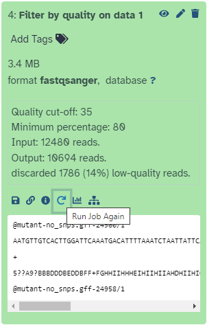
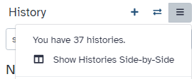

You can also find more possible Galaxy servers at the top of this tutorial in Available on these Galaxies
The Galaxy homepage is divided into three panels:
Tools on the left
Viewing panel in the middle
History of analysis and files on the right
The first time you use Galaxy, there will be no files in your history panel.
Key Galaxy actions
Name your current history
Your “History” is in the panel at the right.
hands_on Hands-on: Name history
Go to the History panel (on the right)
Click on the history name (which by default is “Unnamed history”)
Type in a new name, for example, “My-Analysis”
Press Enter on your keyboard to save it
comment Renaming not an option?
If renaming does not work, it is possible you aren’t logged in, so try logging in to Galaxy first. Anonymous users are only permitted to have one history, and they cannot rename it.
Upload a file
Your “Tools” are in the panel at the left.
hands_on Hands-on: Upload a file from URL
At the top of the Tools panel (on the left), click galaxy-uploadUpload
Your uploaded file is now in your current history.
When the file has uploaded to Galaxy, it will turn green.
comment Comment
After this you will see your first history item (called a “dataset”) in Galaxy’s right panel. It will go through
the gray (preparing/queued) and yellow (running) states to become green (success).
What is this file?
hands_on Hands-on: View the dataset content
Click on the galaxy-eye (eye) icon next to the dataset name, to look at the file content
The contents of the file will be displayed in the central Galaxy panel.
This file contains DNA sequencing reads from a bacteria, in FASTQ format:
Use a tool
Let’s look at the quality of the reads in this file.
hands_on Hands-on: Use a tool
Type FastQC in the tools panel search box (top)
Click on the FastQCTool: toolshed.g2.bx.psu.edu/repos/devteam/fastqc/fastqc/0.72 tool
The tool will be displayed in the central Galaxy panel.
Select the following parameters:
param-file“Short read data from your current history”: the FASTQ dataset that we uploaded
No change in the other parameters
Click Execute
This tool will run and two new output datasets will appear at the top of your history panel.
View results
We will look at the output dataset called FastQC on data 1: Webpage.
comment Comment
Note that Galaxy has given this dataset a name according to both the tool name (“FastQC”) and the input (“data 1”) that it used.
The name “data 1” means the dataset number 1 in Galaxy’s current history (our FASTQ file).
hands_on Hands-on: View results
Click on the galaxy-eye (eye) icon next to the “Webpage” output dataset.
The information is displayed in the central panel
This tool has summarised information about all of the reads in our FASTQ file.
question Questions
What was the length of the reads in the input FASTQ file?
Do these reads have higher quality scores in the centre or at the ends?
solution Solutions
150 bp
In the center
Run another tool
Let’s run a tool to filter out lower-quality reads from our FASTQ file.
hands_on Hands-on: Run another tool
Type Filter by quality in the tools panel search box (top)
Click on the tool Filter by qualityTool: toolshed.g2.bx.psu.edu/repos/devteam/fastq_quality_filter/cshl_fastq_quality_filter/1.0.1
“Percent of bases in sequence that must have quality equal to / higher than cut-off value”: 80
Click Execute
After the tool has run, its output dataset will appear at the top of your History panel.
This dataset will be called “Filter by quality on data 1”.
Remember that Galaxy has named this file according to the tool it used (“Filter by quality”) and the input dataset (“data 1”).
The actual numbers in front of the datasets in the history are not important.
What are the results from this filtering tool?
We could click on the eye icon to view the contents of this output file, but it will not be very informative - we will just see a list of reads.
hands_on Hands-on: Get metadata about a file
Click on the output dataset name in the History panel.
This expands the information about the file.
question Questions
How many read has been discarded
solution Solutions
1786 low-quality reads were discarded
Re-run that tool with changed settings
We have now decided that our input reads have to be filtered to an even higher standard. We will change the filter settings and re-run the tool.
hands_on Hands-on: Re-run the tool
Click on the galaxy-refresh icon (Run this job again) for the output dataset of Filter by qualitytool

This brings up the tool interface in the central panel with the parameters set to the values used previously to generate this dataset.
Change the settings to something even stricter
For example, you might decide you want 80 percent of bases to have a quality of 36 or higher, instead of 35.
Click Execute
View the results: Click on the output dataset name to expand the information. (Note: not the galaxy-eye (eye) icon.)
question Questions
How many reads were discarded under these new filtering conditions?
You can re-run a tool many times with different settings. Each time you re-run the tool, its new output datasets will appear at the top of your current history.
Create a new history
Let’s create a new history.
hands_on Hands-on: New history
Create a new history
tip Tip: Creating a new history
Click the new-history icon at the top of the history panel
If the new-history is missing:
Click on the galaxy-gear icon (History options) on the top of the history panel
Select the option Create New from the menu
Rename your history, e.g. “Next-analysis”
tip Tip: Renaming a history
Click on Unnamed history (or the current name of the history) (Click to rename history) at the top of your history panel
Type the new name
Press Enter
This new history does not have any datasets in it yet.
Look at all your histories
Where is your first history, called “my-analysis”?
hands_on Hands-on: View histories
Click on the View all histories (galaxy-columns icon) at the top right of your history

A new page will appear with all your histories displayed here.
Copy a dataset into your new history
Click on the FASTQ dataset in “my-analysis” history
Drag it into the “Next-analysis” history
This makes a copy of the dataset in the new history (without actually using additional disk space).
Click on Analyze Data in the top panel to go back to your analysis window
Figure 1: Copy a dataset between histories by dragging it
Your main Galaxy window will now show the current history as “Next-analysis”, and it will have one dataset in it.
At any time, you can go back into the “View all histories” page and “Switch to” a different history.
Conclusion
trophy Well done! You have completed the short introduction to Galaxy, where you named the history, uploaded a file, used a tool, and viewed results. Additional tutorials are available for a more in-depth introduction to Galaxy’s features.
keypoints Key points
The Galaxy interface has tools on the left, viewing pane in the middle, and a history of your data analysis on the right.
You can create a new history for each analysis. All your histories are saved.
To get data into Galaxy, you can upload a file by pasting in a web address. There are other ways to get data into Galaxy (not covered in this tutorial): you can upload a file from your computer, and you can import an entire history.
Choose a tool and change any settings for your analysis.
Run the tool. The output files will be saved at the top of your history.
View the output files by clicking on the eye icon.
View all your histories and move files between them. Switch to a different history.
Log out of your Galaxy server. When you log back in (to the same server), your histories will all be there.
Feedback
Did you use this material as an instructor? Feel free to give us feedback on how it went.
Batut et al., 2018 Community-Driven Data Analysis Training for Biology Cell Systems 10.1016/j.cels.2018.05.012
details BibTeX
@misc{introduction-galaxy-intro-short,
author = "Anna Syme",
title = "A short introduction to Galaxy (Galaxy Training Materials)",
year = "2021",
month = "01",
day = "06"
url = "\url{/training-material/topics/introduction/tutorials/galaxy-intro-short/tutorial.html}",
note = "[Online; accessed TODAY]"
}
@article{Batut_2018,
doi = {10.1016/j.cels.2018.05.012},
url = {https://doi.org/10.1016%2Fj.cels.2018.05.012},
year = 2018,
month = {jun},
publisher = {Elsevier {BV}},
volume = {6},
number = {6},
pages = {752--758.e1},
author = {B{\'{e}}r{\'{e}}nice Batut and Saskia Hiltemann and Andrea Bagnacani and Dannon Baker and Vivek Bhardwaj and Clemens Blank and Anthony Bretaudeau and Loraine Brillet-Gu{\'{e}}guen and Martin {\v{C}}ech and John Chilton and Dave Clements and Olivia Doppelt-Azeroual and Anika Erxleben and Mallory Ann Freeberg and Simon Gladman and Youri Hoogstrate and Hans-Rudolf Hotz and Torsten Houwaart and Pratik Jagtap and Delphine Larivi{\`{e}}re and Gildas Le Corguill{\'{e}} and Thomas Manke and Fabien Mareuil and Fidel Ram{\'{\i}}rez and Devon Ryan and Florian Christoph Sigloch and Nicola Soranzo and Joachim Wolff and Pavankumar Videm and Markus Wolfien and Aisanjiang Wubuli and Dilmurat Yusuf and James Taylor and Rolf Backofen and Anton Nekrutenko and Björn Grüning},
title = {Community-Driven Data Analysis Training for Biology},
journal = {Cell Systems}
}
congratulations Congratulations on successfully completing this tutorial!
 Anna Syme
Anna Syme